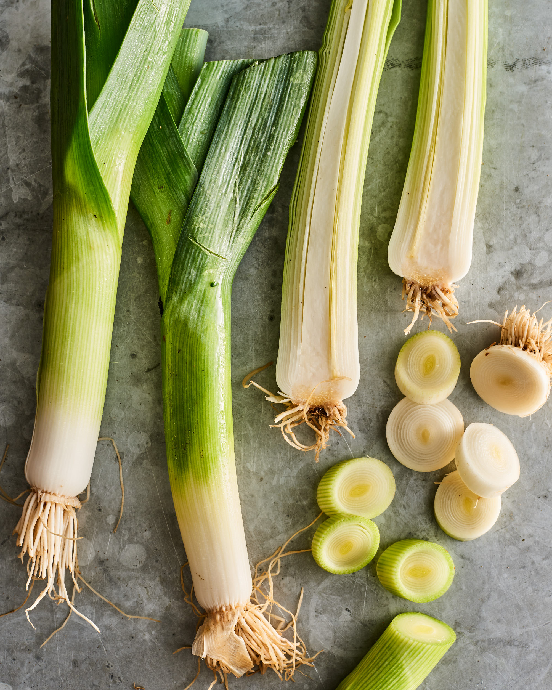
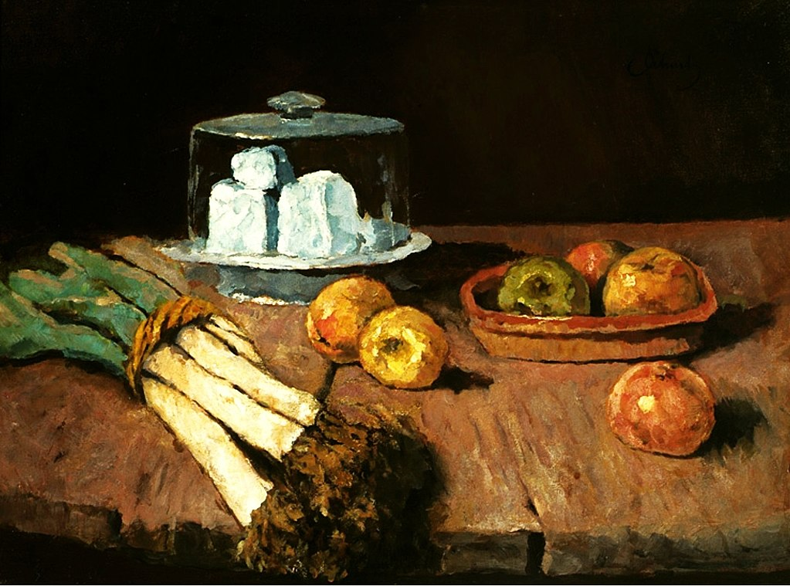
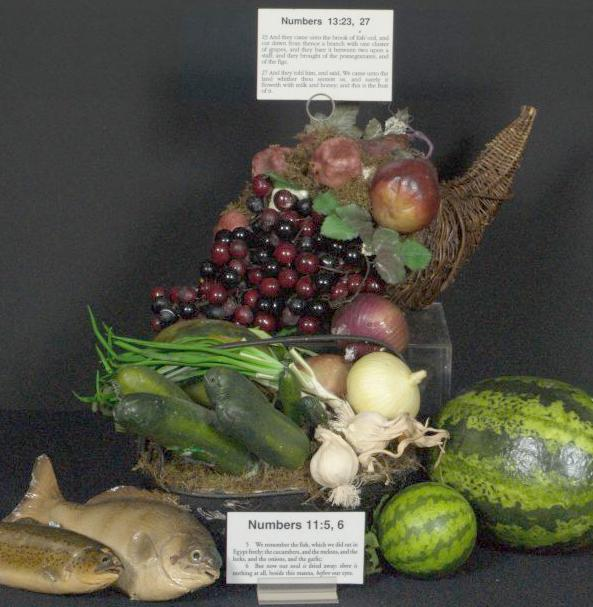

영화 속 쇼핑 장면에서 갈색 봉투 속에 든 것은 정말 파일까?
게시: 2020-05-21T06:30:31+09:00
지난 주에 많은 찬사와 비난을 함께 받으며 끝난 화제의 드라마 '부부의 세계'를 저도 (빼놓지 않고 다 본 것은 아니지만) 자주 봤습니다. 실제 우리나라 부부치고는 거주하는 집이나 벌이는 파티 등 생활 수준이 너무 높다는 생각이 듭니다만, 사실 그런 경향은 꼭 이 드라마에만 국한되는 것은 아니지요. 그런데 그렇게 서구적인 삶을 사는 드라마 속의 배우들이 쇼핑을 할 때 꼭 등장하는 소품이 있습니다. 지난 주말에 부부의 세계에서도 김희애가 들고 나왔습니다. 커다란 갈색 종이봉투에 든 바게뜨와 길쭉한 대파 몇줄기가 바로 그것입니다. 우리나라 드라마에서야 저게 파라는 것을 알겠습니다만, 저는 외국 영화에서 프랑스인들이 쇼핑할 때 꼭 나오는 길쭉한 대파를 볼 때마다 신기하게 생각했습니다. 서양 사람들도 파를 먹나?
(저렇게 갈색 봉투 속에 삐죽 튀어나온 파 같은 채소는 정말 파일까요? 오른쪽 채소는 셀러리인데 과연 왼쪽 채소는...?)
보통 우리가 먹는 파를 영어로 번역할 때 green onion이라고 합니다. 사실 파나 양파나 마늘이나 부추나 파(Allium)속(genus)에 포함되는 채소입니다. 그래서 파나 양파나 마늘이나 다 매운 맛이 나는 것이지요. 그런데 보통 영화 속에서 서양 사람들이 갈색 종이봉투에 꽂고 다니는 것은 가끔 샐러리나 아스파라거스인 경우도 있지만 대부분은 '서양 파'에 해당하는 릭(leek)입니다. 릭도 파속 채소니까, 결국 정말 서양 사람들도 파를 먹는 셈이지요. 심지어 영어에서 leek이라는 단어의 어원은 leac이라는 고대영어 단어인데, 여기서 마늘(garlic)이라는 단어도 함께 파생되었다니까 이래저래 같은 뿌리입니다. 파속 채소 중에는 영어로 Chinese onion 혹은 Chinese scallion이라고 부르는 염교라는 것도 있는데, 그 뿌리가 바로 우리가 흔히 초밥집에서 먹는 락교입니다.

(서양 파인 릭(leek)입니다.)
저는 먹을 것에 대한 호기심과 탐욕이 많아서, 외국에 나갈 경험이 있으면 항상 다양한 식재료를 먹어보려고 노력하는 셈입니다. 그래서 오크라(okra)나 아티초크(artichoke) 같은 것도 먹어보고 '아 이런 맛이구나'라고 하며 기뻐하곤 했는데, 저 릭이라는 서양 파는 한번도 먹어볼 기회가 없어서 아쉽게 생각하고 있습니다. 다만 글을 읽어보면 릭은 우리나라 파와는 달리 매운 맛이 매우 연하게 나서, 심지어 양파보다도 더 연한 맛이 난다고 합니다. 그래서 아마 우리나라 파를 leek이라고 번역하지 않고 green onion이라고 번역하나봐요. 우리나라에서는 매운 맛이 강하게 나는 파는 채소라기보다는 양념으로만 쓰는데 비해, 서양에서는 릭을 수프나 샐러드 등에 사용합니다. 그리고 잎부분부터 뿌리 바로 위까지 다 먹는 우리나라 파와는 달리, 릭은 밑동의 흰 부분만 먹고 푸른 잎 부분은 질기기 때문에 대개 그냥 버린답니다.
(릭 수프입니다. 실제로는 감자가 주재료고 릭은 그냥 거들 뿐입니다. 저 위에 뿌려진 잘게 썬 채소는 고명으로 얹은 부추(chive)일 뿐 릭이 아닙니다. 잘게 썬 릭은 바닥에 가라앉아 있습니다.)
영국이나 프랑스나 릭을 이용한 대표적인 요리는 릭 수프(leek soup)인데, 사실 이건 릭 수프라기 보다는 감자 수프에 릭을 넣은 것입니다. 서양 수프 중에 양파 수프도 사실 알고 보면 베이컨 수프에 양파를 넣은 것인 것처럼, 릭 수프도 육수(주로 닭 육수)에 잘게 썬 감자와 릭을 넣고 끓인 뒤 크림을 넣은 것입니다. 이 릭 수프는 불어로 수프 포와로(soupe poireaux)라고 하는데, 불어로 leek이 poireau(poireaux는 복수형) 입니다. 이 이름이 뭔가 익숙하지 않으십니까 ? 아가사 크리스티 추리 소설의 주인공인 벨기에 탐정 에르큘 포와로(Hercule Poirot)와 스펠링만 다르고 발음은 똑같습니다. 이건 의도된 작명입니다. 아가사 크리스티가 포와로를 창조할 때, 집 근처에 살던 1차 세계대전을 피해 영국으로 피난온 벨기에인 전직 경찰을 보고 탐정의 국적을 벨기에로 설정했고, 이름도 싸구려 채소인 릭 또는 작은 종기인 사마귀(곤총 말고 피부에 나는 사마귀)를 뜻하는 Poireau와 발음이 같은 Poirot로 정했다고 합니다. 일부러 first name은 천하장사 헤라클레스의 불어 이름인 에르큘(Hercule)로 했고요. 그래서 first name과 last name이 서로를 조롱하도록 했다고 합니다.
(사진 속 포와로는 영국 배우 케네스 브라나(Kenneth Branagh)가 열연한 2017년작 오리엔탈 특급 살인사건의 포와로입니다. 저 수염이 트레이드 마크지요. 케네스 브라나가 누구냐고요? 영화 '덩케르크'에서 해변에서 철수 작전을 지휘하던 해군 대령이 그 사람입니다. 이 양반은 감독도 하고 영화제작자도 하는데, 가령 마블 영화 토르 1편은 이 양반이 감독을 했습니다.)
릭이 싸구려 채소인가요 ? 우리나라에서 파가 비싼 채소가 아닌 것처럼 릭도 결코 비싼 식재료는 아닙니다. 서양 부추(chives)도 릭처럼 파속 채소인데 부추도 마찬가지입니다. 예전에 어떤 유럽 고전 소설 속에서 (책 이름은 기억이 나질 않습니다) 주인공이 가난한 집에 들어서는 장면을 묘사하면서 '그 집에 들어가자 싸구려 음식인 부추와 마늘 냄새가 났다' 라는 구절을 읽은 적이 있습니다. 마늘은 그렇다치고, 부추에서 무슨 냄새가 난다는 것인지 의아했는데, 유럽인들, 특히 영국 독일 스칸디나비아 등 북부 유럽인들은 냄새에 무척 민감해서 그런지 부추에서도 꽤 강한 냄새가 난다고 생각하는 모양입니다. 그래서인지 서양 사람들도 릭을 그다지 많이 먹는 것 같지는 않습니다. 영화 속에서 쇼핑하는 유럽 사람들이 종이봉투에 릭을 꽂고 다니는 것으로 나오는 것은 순전히 시각 효과 때문 같아요. 또 그래서 제가 노력해봐도 릭을 맛볼 기회가 없었던 모양이고요. 혹시 영국이나 독일은 그렇다치고, 아무래도 릭은 흔히 바게뜨 빵과 함께 종이 봉투에 들어있는 것으로 나오니까 프랑스 사람들은 릭을 많이 먹나 싶었는데, 예, 역시 그렇지는 않답니다.

('릭이 있는 정물'. 19세기 후반 오스트리아 화가 칼 셔흐(Carl Schuch)의 그림입니다.)
하지만 분명히 릭은 굉장히 유서깊은 채소로서, 심지어 성경에도 나옵니다. 제가 자주 인용했던 민수기 11장 5절 부분에서, 이집트에서 탈출한 유대인들이 반찬 투정하면서 이집트에서 먹었던 맛난 음식들을 열거할 때 생선과 함께 부추와 파 이야기가 나옵니다. 한글 성경에서는 leek을 부추로, onion을 파로 번역했는데, 꼭 잘 된 번역이라고 보기는 좀 그렇습니다.
민수기 11:5 우리가 애굽에 있을 때에는 값없이 생선과 오이와 참외와 부추와 파와 마늘들을 먹은 것이 생각나거늘
Numbers 11: 5 We remember the fish we ate in Egypt at no cost - also the cucumbers, melons, leeks, onions and garlic
사실 학자들은 이 민수기 11장 5절에 열거된 채소 이름을 보면서 입장이 다소 곤란하다고 합니다. 학문적으로, 고대 이집트에서는 오이가 없었다고 하거든요. 그래서 틀림없이 저기서 말하는 cucumber라는 것은 오이라기보다는 머스크멜론(muskmelon)을 뜻하는 것이고, 또 한글로 '외'(참외)라고 번역된 melon은 실제로는 수박(watermelon)을 뜻하는 것이라고 해석한답니다. 수박은 원래 서부 아프리카가 원산지입니다.

(민수기 11장 5절의 채소를 모아놓은 전시물인가봐요 ? 여기서는 오이와 수박을 전시했군요.)
(유대인들의 반찬투정에 대한 응답으로, 여호와 하나님께서는 생선과 파, 마늘 대신에 치킨 메추리 떼를 내려보내주십니다. 아무래도 하나님도 파처럼 냄새나는 채소는 싫어하셨나봐요.)
보통 집에 손님이 온다고 하면 괜히 화장실 청소도 한번 더 하고 거실 바닥도 한번 더 쓸고 닦게 되는데, 실은 손님이 그 집에 들어설 때 받는 인상 중에서 가장 큰 영향을 미치는 것은 바로 냄새라고 합니다. 저 개인적인 경험으로도 그렇습니다. 그래서 쓸고 닦는 것도 중요하지만 무엇보다 환기가 중요하다고 해요. 그런 점에서 우리나라 가정들은 몹시 불리한 입장입니다. 아무래도 음식에 마늘과 파 같은 자극적인 냄새가 나는 양념을 많이 쓰니까 먹는 사람은 맛은 좋지만 밖에 있다 집에 들어서는 사람들은 그다지 유쾌한 기분이 들지는 않습니다. 그래서 더더욱 잦은 환기가 중요합니다. 저는 식사 중이거나 또는 막 식사를 끝낸 서양 사람 가정집을 방문할 기회를 가지지 못해서 그런 집의 냄새는 어떤지 모르겠고, (제 카투사 경험 때문에) 미군 영내 식당의 냄새는 익숙합니다. 우리나라 구내 식당에서 마늘과 파 냄새가 나는 것처럼, 미군 식당에서는 기본적으로 토마토 냄새가 납니다. 그것도 뭐 딱히 향극한 냄새는 아니에요. 일본 회사 구내 식당에서는 간장 냄새가 기본이고요. 그것도 뭐 역시... 그래서 어느 나라건 잦은 환기가 중요합니다.
(미군 식당입니다. 딱 들어서면 들어서면 토마토 케첩 쩐냄새가 납니다. 정식 이름은 다이닝 퍼실러티(Dining Facility)이지만 그냥 디팩(DFAC)이라고 부르기도 하고 혹은 차우 홀(Chow hall)이라는 속어로도 부릅니다. 주한 미군의 식당과 음식은 사진 속의 저것보다는 훨씬 더 괜찮은 편입니다.)
Source : https://en.wikipedia.org/wiki/Leek https://en.wikipedia.org/wiki/Murder_on_the_Orient_Express_(2017_film) https://www.goodtoknow.co.uk/recipes/leek-asparagus-and-pea-pasta https://en.wikipedia.org/wiki/Leek_soup https://www.onceuponachef.com/recipes/potato-leek-soup.html https://en.wikipedia.org/wiki/Allium_chinense https://happydietitian.wordpress.com/2012/12/19/not-your-typical-stinky-plants/
https://ww2.odu.edu/~lmusselm/plant/bible/melon.php
Icons of Mystery and Crime Detection: From Sleuths to Superheroes by Mitzi M. Brunsdale